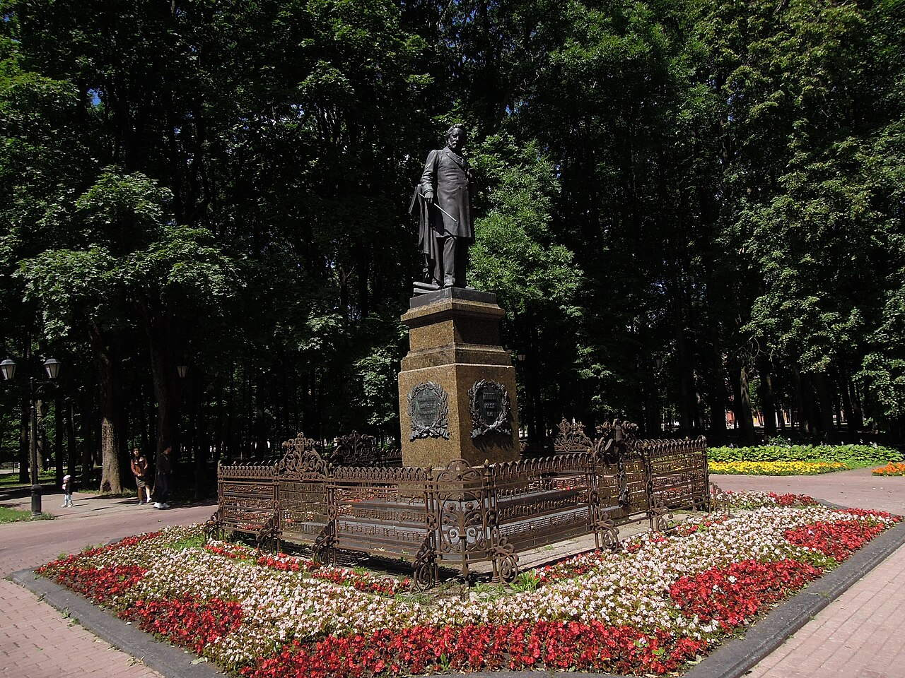

OTIUM is the practice of deliberate leisure. In the classical sense, otium is not escape from work but time when attention returns to memory, landscape, and thought — without a utilitarian deadline.
We shape routes for lingering, not for checklist tourism. The goal is presence in a place rather than consumption of sights.
OTIUM is not a tour operator. It is an invitation to walk, pause, and leave a route unfinished if the light on a façade deserves another minute.
Smolensk
Guide. Places in this edition: 70.
Smolensk is an ancient, quiet city of fortress walls, river terraces, and church domes—yet its history is loud: a key to Moscow’s western gate, a witness to 1812 and the Second World War, a birthplace of musicians, writers, and explorers. This guide lingers on places where that depth is visible in stone, bronze, and everyday streets.
Historical and reference coats of arms
Smolensk, sentinel city of Rus
Smolensk land — sunny country
Oblast (book coat of arms and flag)
Historical overview
Smolensk is among the oldest cities of Russia, named in chronicles by the ninth century and emerging as a major settlement on the “from the Varangians to the Greeks” trade route.
For centuries it guarded the western approaches to Rus and later Russia: a walled citadel on the Dnieper, contested by Lithuanian and Polish armies, returned to Moscow’s orbit in 1667 after a long Polish occupation. The sixteenth-century fortress ring—exceptionally dense with towers—still frames the old town beside churches from the pre-Mongol era and baroque ensembles.
In August 1812 a battle near Smolensk disrupted Napoleon’s march on Moscow; in 1941–1943 the region saw heavy fighting that slowed the German advance toward the Soviet capital. Post-war reconstruction restored museums, theatres, and memorial parks while new quarters spread beyond the kremlin hills.
Today Smolensk remains a regional centre of education and culture on the Moscow–Minsk corridor, with festivals, river landscapes, and a layered memory of trade, faith, and frontier defence.
Ascension (Voznesensky) Monastery
Style: Baroque and Baroque Revival | Period: 1614
The Smolensk region is home to numerous ancient Orthodox monasteries that have played a significant spiritual and cultural role for centuries. Among them, the Novodevichy Convent stands out as one of Russia's most iconic religious sites. Established in 1614, the convent is one of the oldest in Russia. It served as a refuge for noblewomen during times of conflict. The monastery complex includes several churches and chapels, each with unique architecture. Notable relics and icons are housed within the convent’s museum. Novodevichy is listed as a UNESCO World Heritage Site.
Founded in the early 17th century by Tsar Alexis I, the Novodevichy Convent was originally built to commemorate the victory over Polish invaders during the Time of Troubles. Over time, it became a symbol of national unity and resilience, hosting important religious ceremonies and royal burials. Visitors come to admire its rich architectural heritage and to reflect on the historical significance of this site.
Hotel Smolensk
Style: medieval and Baroque | Period: 11th century
Located on the banks of the Dniepr River, Smolensk's Kremlin is a testament to Russia's rich historical heritage. This ancient fortress, dating back to the 11th century, has been central to numerous battles and sieges throughout its long history. The Kremlin contains seven towers and four gates, each with distinct designs reflecting different periods of construction. It features the Cathedral of the Assumption, one of the oldest surviving Orthodox cathedrals in Russia. Restoration work began in the late 20th century after significant damage sustained during World War II. Today, it serves as a museum complex showcasing artifacts related to local history and culture. Its location provides panoramic views of the surrounding cityscape.
Originally constructed in the 11th century as a defensive structure, Smolensk Kremlin has played a crucial role in several pivotal moments in Russian history. It was besieged by Polish-Lithuanian forces during the 17th century and later became a symbol of resistance against Napoleon’s invasion in 1812. The Kremlin's walls, towers, and churches reflect both medieval and Baroque architectural styles, showcasing the fusion of cultural influences over centuries. Visitors come to admire Smolensk Kremlin for its unique blend of historical significance and architectural beauty.
Palace of youth creativity (former Pioneer Palace)
Style: Russian Baroque and medieval fortification style | Period: 16th century
Located on the banks of the Dniepr River, Smolensk's historic center is home to numerous landmarks that reflect its rich cultural heritage and strategic importance throughout history. The Smolensk Kremlin is listed as a UNESCO World Heritage Site. It features impressive towers such as the Golden Gate and the Trinity Tower. The Assumption Cathedral within the Kremlin dates back to the early 17th century. The city's coat of arms depicts two lions holding a sword and shield, symbolizing strength and courage. Annual festivals celebrate local traditions and folklore.
Founded in the 9th century, Smolensk has been a key fortress city in Russia since ancient times. It was repeatedly besieged by foreign powers, including Poland-Lithuania and Sweden, making it one of the most fought-over cities in Europe. The Kremlin, built in the 16th century, remains a testament to its military significance and architectural prowess. Visitors come to Smolensk for its well-preserved historical architecture and unique blend of Russian Orthodox churches and medieval fortifications.
Dnieper river in Smolensk
Style: Medieval fortress architecture | Period: 11th century
The Kremlin of Smolensk is a striking historical landmark that dominates the city's skyline and serves as a testament to its rich past. Built on a hill overlooking the River Dniepr, it stands as one of Russia's oldest fortresses. Built on a strategic location overlooking the River Dniepr. One of Russia's oldest fortresses dating back to the 11th century. Consists of several towers and defensive walls. Used as both a military stronghold and administrative center. Renovated multiple times but retains much of its original structure.
Originally constructed in the 11th century, the Kremlin has been expanded and reconstructed numerous times throughout its long history. It played a crucial defensive role during medieval conflicts and served as a political center for local rulers. The Kremlin's towers and walls are notable features, each with its own unique design and significance. Visitors come to admire the Kremlin's architectural beauty and learn about its pivotal role in shaping Smolensk's history.
House of Books (Bolshaya Sovetskaya)
Style: fortress architecture | Period: 1978
Built in the late 16th century, Smolensk's Kremlin is a fortress complex that stands as one of Russia's most iconic historical sites. It was first mentioned in written records in 1404 and has been through numerous sieges and battles over its long history. Constructed in the late 16th century under Tsar Ivan IV (Ivan the Terrible). Consists of five towers and two gates. Withstood multiple sieges throughout its history. Listed as a UNESCO World Heritage Site since 1970. Serves as a museum showcasing artifacts related to local history and culture.
The Kremlin of Smolensk was constructed during the reign of Ivan the Terrible in the late 1500s to protect the city against frequent invasions by Polish-Lithuanian forces. The Kremlin withstood several attacks, including those led by King Stefan Batory in the early 17th century. Today it remains a testament to Russia’s military heritage and cultural resilience. Visiting Smolensk Kremlin allows travelers to immerse themselves in Russia's rich historical past while appreciating its architectural beauty.
Engelhardt House (wedding palace)
Style: Russian Orthodox Baroque and Fortress Architecture | Period: late 16th century
The Kremlin of Smolensk is a solemn testament to Russia's medieval past, standing as one of the oldest and most historically significant fortresses in the country. Constructed between 1545 and 1550 AD. Consists of three main gates: Nikolskaya, Sobornaya, and Zaretskaya. Surrounded by a moat and defensive walls. Features several churches within its grounds including the Cathedral of the Assumption. Listed as a UNESCO World Heritage Site since 1990.
Built in the late 16th century during the reign of Ivan the Terrible, the Kremlin was originally constructed to defend against Polish-Lithuanian invasions. It has witnessed countless battles, sieges, and political upheavals over five centuries, earning its status as a symbol of resilience and unity for the region. Visitors come here to experience the rich historical heritage and architectural beauty of Smolensk's landmark.
Budnikov merchant house
Style: fortified architecture | Period: late 16th century
The Kremlin of Smolensk is a solemn and imposing structure, dominating the city's skyline with its towering bell towers and fortress walls. Built on a hilltop overlooking the Dniepr River, it serves as both a historical monument and a symbol of resilience. It was first mentioned in written records in 1596. The Kremlin features several notable churches including the Church of the Intercession on the Nerl. Its layout includes four main gates and numerous bastions. Restoration work began in the early 20th century after significant damage from wars and neglect.
Constructed during the late 16th century, the Kremlin was originally designed to protect the city against invasions by Polish-Lithuanian forces. Over time, it became a key defensive point for Russia's western border. Today, visitors can explore its rich history through preserved structures such as the Cathedral of the Assumption and the Tomb of Prince Yuri Dolgoruky. Visiting the Kremlin allows travelers to immerse themselves in the city's deep historical roots and appreciate its strategic importance throughout centuries of conflict.
House associated with Marshal Georgy Zhukov
Style: medieval military architecture with Renaissance influences | Period: late 16th century
The Kremlin of Smolensk is a majestic ensemble of fortress walls and towers that dominates the city's skyline. Originally constructed in the 16th century, it was rebuilt after numerous sieges and fires to become one of Russia's most impressive historical sites. Constructed during the reign of Tsar Ivan the Terrible. Features five main towers and a long perimeter wall. Design influenced by Italian Renaissance architectural styles. Used as a prison during Soviet times. Listed as a UNESCO World Heritage Site since 1994.
Built in the late 16th century by Grand Prince Ivan IV, the Kremlin served as a defensive stronghold for the city against frequent invasions. It has been reconstructed several times following major conflicts, including the Great Northern War and Napoleon's invasion in 1812. Today, its towers and walls are among the best-preserved examples of medieval military architecture in Russia. Visitors come to admire the Kremlin's imposing structure and rich historical significance, which reflect centuries of Russian history and culture.
House associated with Marshal Mikhail Tukhachevsky
Style: medieval Russian fortification | Period: late 16th century
The Kremlin of Smolensk is a solemn testament to the city's rich historical heritage and military prowess. Perched on a hilltop overlooking the Dniepr River, it stands as one of Russia's most impressive fortresses. Constructed using brick and stone, the Kremlin features unique defensive architecture typical of medieval Russian fortifications. It served as a key strategic point during numerous battles throughout its history, including the Great Northern War and Napoleon's invasion of Russia. Today, the Kremlin houses several museums showcasing artifacts related to local history and culture. The highest tower offers panoramic views of the surrounding area, making it a popular vantage point for photography enthusiasts. Restoration work has been ongoing since the early 2000s to preserve its original appearance.
Built in the late 16th century, the Kremlin was originally constructed by Grand Duke Vasily III to defend against Polish-Lithuanian invasions. It later became a symbol of Tsarist authority during the reigns of Ivan IV and Pyotr I. The Kremlin's walls are adorned with five towers, each representing different eras of construction and defense strategies. Visitors come here to witness the architectural grandeur and cultural significance of Smolensk's past.
The Kremlin of Smolensk, a towering fortress overlooking the River Dniepr, is one of Russia's most iconic historical sites dating back to the early medieval era. Constructed primarily from brick and stone, the Kremlin features several towers and gates that have been restored multiple times. It houses the Museum of Military Glory, showcasing artifacts related to battles fought here. The Kremlin also includes a cathedral where notable figures were buried, adding to its cultural significance. During World War II, the Kremlin suffered severe damage but has since undergone extensive renovations. Today, visitors can climb to the top of the highest tower for panoramic views of the city.
Built in the late 11th century, the Kremlin served as both a defensive stronghold and administrative center for the Grand Duchy of Smolensk. It was repeatedly besieged by various invaders throughout its long history, including the Polish-Lithuanian Commonwealth and later Napoleon’s Grande Armée during the disastrous invasion of Russia in 1812. Today, it stands as a testament to the city's rich heritage and resilience. Visitors come to admire the Kremlin's architectural beauty and to reflect on its significant role in Russian military history.
Drama theatre
Style: Classical and neoclassical architecture | Period: 1876
In Smolensk, one of Russia's oldest cities, the theater scene flourished during the late 19th century, showcasing cultural vibrancy and artistic innovation. The city's theaters were centers for local performances, drawing audiences eager to experience new plays and operas. The Grand Theater was built in 1840 and served as a premier venue for performances. By 1876, there were at least three major theaters operating within the city limits. Local artists often collaborated with visiting performers to create unique productions. These theaters also provided opportunities for young talent to gain exposure and develop their skills. Many famous actors and actresses performed on these stages.
Established in the early 18th century, Smolensk's theaters became significant cultural hubs by the mid-19th century. By 1876, several notable venues had been constructed, including the Grand Theater, which hosted a variety of performances ranging from classical ballets to dramatic productions. These theaters played pivotal roles in shaping the city's identity as a center for arts and entertainment. Visiting these historic theaters allows travelers to immerse themselves in Smolensk's rich cultural heritage and appreciate its contribution to Russian theatrical traditions.
Smolensk railway station
Style: neoclassical | Period: 1896
Smolensk Railway Station is a major transportation hub for the region, connecting travelers to various parts of Russia and Europe. Constructed in 1896, the station reflects the elegance and sophistication typical of late 19th-century Russian architecture. It features grand columns, ornate facades, and intricate decorative elements that make it one of the most notable examples of neoclassicism in Russia. The station underwent extensive renovations in the early 2000s, restoring its original appearance while modernizing infrastructure. Today, it remains an active transportation center serving both passengers and freight trains. Located at the intersection of several important rail routes, it continues to play a vital role in regional logistics.
Built in the late 19th century, Smolensk Railway Station was designed by renowned architect Ivan Baranovsky in the neoclassical style. It served as a significant point on the transcontinental rail network and played a crucial role during World War II, when it became a strategic location for military transport and evacuation efforts. Visitors should come to experience its historical significance and architectural beauty, which has been preserved over time.
Przhevalsky Gymnasium building
Style: Russian Orthodox Baroque | Period: late 16th century
Located at the heart of Smolensk, Russia, the Kremlin is a testament to centuries-old architectural heritage and military might. Its towering walls and majestic towers stand as a symbol of resilience and cultural pride. Constructed between 1540 and 1550 AD. Consists of four corners and five towers. The Kremlin's walls are approximately 2 kilometers long. It served as a prison during Soviet times. Today, it hosts various cultural events and exhibitions.
Built during the late 16th century, the Smolensk Kremlin was constructed by Tsar Ivan IV to defend against frequent invasions. Over time, it became a significant fortress and administrative center for the region. Notable features include its three main gates and the Church of the Assumption, which houses relics associated with Saint Herman of Smolensk. Visitors come here to appreciate the rich historical legacy and breathtaking views overlooking the city.
Sovremennik cinema
Period: 1967
In Smolensk, one of Russia's oldest cities, the theater scene flourished during the mid-20th century. Theatergoers could enjoy performances at several venues, each with its own unique charm and historical significance. The Theater Square was the heart of theatrical life in Smolensk during the 1960s. Many famous actors and directors hailed from Smolensk or performed there regularly. Classic works such as 'War and Peace' were frequently staged at the main theater. Local productions often incorporated traditional folk elements into their performances. Performances attracted both locals and tourists eager to witness high-quality drama.
Established in the late 18th century, Smolensk's theater tradition has deep roots. By the 1960s, it had become a vibrant cultural hub, showcasing classical plays and modern dramas that captivated audiences across the region. Notable figures like Alexander Pushkin and Leo Tolstoy once frequented these stages, adding to their enduring appeal. Visiting Smolensk's theaters allows travelers to immerse themselves in the city's rich cultural heritage and experience live performances by talented local artists.
Roman Catholic church of the Immaculate Conception
Style: Russian Baroque | Period: 1680–1704
The Cathedral of the Assumption is Smolensk's most iconic religious landmark, towering majestically over the historic center. Built during the late 17th century, it stands as a testament to Russia’s Baroque architecture and spiritual heritage. It is one of the oldest surviving examples of Russian Baroque architecture. The cathedral underwent extensive restoration work after being severely damaged during World War II. Its bell tower offers panoramic views of the cityscape below. Inside, visitors can see relics associated with Saint Herman of Smolensk, a prominent figure in local history. A separate chapel within the complex houses the tomb of Patriarch Nikon, a significant religious leader.
Constructed between 1680 and 1704, the cathedral was originally designed by Italian architect Francesco Ragusa. It served as a symbol of unity for the Orthodox Church in Russia, reflecting its rich cultural and historical significance. The cathedral's interior features elaborate frescoes and icons, showcasing traditional Russian artistry. Visitors come here to experience the solemn atmosphere and appreciate the intricate details of its architectural design and artistic embellishments.
Kremlin gate and wall
Style: Russian Fortress Style, influenced by Baroque | Period: late 16th century
The Kremlin of Smolensk is a testament to the city's rich historical heritage and strategic importance. Located on a hill overlooking the Dniepr River, it dominates the skyline with its fortress-like structure and towering spires. Constructed during the reign of Tsar Ivan IV (Ivan the Terrible). Consists of five main towers and three gates. Restored after extensive damage during World War II. Features intricate stone carvings and decorative elements typical of Russian architecture. Surrounded by a moat that adds to its imposing appearance.
Built in the late 16th century, the Kremlin served as both a defensive stronghold and administrative center for the region. Its construction was part of Russia's efforts to secure control over the western borderlands following the Union of Lublin in 1569. The Kremlin's walls and towers have witnessed countless battles and sieges throughout the centuries, making it one of the most significant landmarks in Russian history. Visitors come here to experience the city's vibrant past and admire its architectural beauty, which reflects the fusion of medieval fortifications and later Baroque influences.
Fortress wall (vintage card)
Style: Russian medieval fortification style | Period: late 16th century
At the heart of Smolensk stands one of Russia's most significant historical landmarks—the Kremlin of Smolensk. This ancient fortress dominates the city's skyline and serves as a testament to its rich cultural heritage. Built in the late 16th century, it is one of the oldest surviving fortresses in Russia. It features seven towers, each with unique designs and historical significance. During World War II, the Kremlin served as a strategic defense point against German invaders. Today, it houses museums showcasing artifacts related to local history and culture. The Kremlin also includes churches dating back several centuries.
The Kremlin was originally constructed in the 16th century during the reign of Ivan the Terrible. It has witnessed numerous battles throughout history, including the infamous Siege of Smolensk by Polish-Lithuanian forces in 1611. The Kremlin's towering walls and towers symbolize both military prowess and architectural elegance. Visiting the Kremlin offers insight into Smolensk's past while providing stunning views overlooking the city center.
Tenishev cultural and exhibition centre
Period: early 1960s
Smolensk's Museum of Local Lore is a treasure trove of historical artifacts and cultural relics showcasing the region's rich heritage. Established during the Soviet era, it has become one of Smolensk's most important institutions for preserving local memory. It houses over 80,000 items in its collections. Exhibits range from ancient pottery to contemporary works by local artists. Regularly hosts educational programs and lectures on local history. Located within walking distance of historic downtown Smolensk. Operates year-round with extended hours during peak seasons.
The museum was founded in the early 1960s as part of a broader effort to document regional history and culture. Over time, its collection grew to include archaeological finds, artworks, and documents that tell the story of Smolensk's past from prehistoric times through modern day. Visitors come here to gain insight into the area's unique traditions and customs, while also learning more about the region’s pivotal role in Russia's history.
Lopatinsky Garden
Style: Russian landscape style | Period: early 17th century
Located on the banks of the Dniepr River, Smolensk Park is a picturesque oasis where nature meets urban charm. This green space offers tranquil walks through manicured lawns and shady paths, perfect for escaping the hustle and bustle of city life. Established in the early 17th century. Design influenced by traditional Russian landscape architecture. Features numerous benches and picnic areas. Monuments commemorate significant historical figures. Breathtaking views of the surrounding river and forests.
Founded in the 16th century as a royal hunting ground, Smolensk Park has been a cherished retreat for generations. Over time, it evolved into a public park, becoming a symbol of leisure and relaxation for locals and visitors alike. Today, its historical significance remains intact, with notable landmarks such as the monument to Tsar Alexei Mikhailovich and the historic pond dating back centuries. Visitors come here to enjoy the serene atmosphere, take a stroll along winding paths, and appreciate the beauty of nature amidst the cityscape.
Memorial at the brotherly cemetery (1941–1943 occupation)
Style: medieval fortification with Baroque influences | Period: 1968
Located on the banks of the Dniepr River, Smolensk's Kremlin is a historical fortress and one of Russia's oldest urban centers. Founded in the 9th century, it has been a witness to countless battles and political upheavals throughout its long history. The Kremlin walls are approximately 2.5 kilometers long and feature nine towers. It houses several notable churches, including the Assumption Cathedral and the Spaso-Preobrazhensky Monastery. In 1968, the Kremlin was listed as a UNESCO World Heritage Site due to its significant historical and architectural value. During World War II, the Kremlin suffered severe damage but was painstakingly restored after the war. Today, it remains an active religious site and serves as a museum showcasing artifacts related to local history.
Founded in the early 9th century by Prince Vseslav, Smolensk Kremlin was originally constructed as a defensive structure against Viking raiders. Over centuries, it became a key military and administrative center for various rulers, including Grand Princes of Kiev and later Tsars of Russia. The Kremlin withstood numerous sieges and attacks, notably during the Polish-Lithuanian invasion of 1610–1611, when it served as a symbol of resistance against foreign occupation. Visitors come to admire the Kremlin's unique architecture, which blends elements of medieval fortifications with later Baroque influences, making it a testament to Russia's rich cultural heritage.
Katyn memorial complex (Smolensk)
Style: medieval fortification | Period: 10th century
The Kremlin of Smolensk is a majestic medieval fortress overlooking the River Dniepr, its towering walls and towers standing as a testament to Russia's rich historical heritage. Built on a hilltop above the River Dniepr, the Kremlin dominates the city's skyline. It features five main towers, including the iconic Spaso-Preobrazhensky Tower. Restoration work began in the late 19th century after significant damage during World War II. The Kremlin also contains churches and monasteries within its grounds.
Founded in the 10th century, the Kremlin has served as both a defensive stronghold and a symbol of power for centuries. Its architectural design reflects the evolution of Russian military engineering, with each addition telling a story of changing times and threats. The Kremlin's towers are particularly notable, offering panoramic views of the city and surrounding countryside. Visitors come here to experience the ancient atmosphere and appreciate the remarkable architecture that encapsulates nearly a millennium of Russian history.
Monument to Yuri Gagarin
Style: Soviet realism | Period: 1968
In the heart of Smolensk stands a timeless monument, reflecting the city's rich historical heritage and artistic spirit. This sculpture, created in 1968, is a testament to Soviet realism and its enduring influence on local culture. The sculpture was unveiled in 1968 amidst festive celebrations marking the city's anniversary. It is crafted using traditional bronze casting techniques, showcasing meticulous craftsmanship. Located near major landmarks, it serves as a focal point for both locals and tourists alike. This piece reflects the fusion of classical and modern styles, blending traditional forms with contemporary themes. Its design highlights key elements of Smolensk's architectural and cultural legacy.
Commissioned during the late 1960s, this sculpture was designed by renowned artist Ivan Pyotrovich to commemorate significant moments in regional history. It occupies a prominent position within the cityscape, drawing attention to its symbolic significance as a symbol of unity and resilience. Visitors should see this sculpture for its evocative representation of Smolensk's cultural identity and its role in shaping public memory.
Russian Antiquity museum (Tenisheva house)
The Smolensk Museum Complex is a significant cultural and historical institution showcasing the rich heritage of Smolensk region. Located in the heart of the city, it houses several notable exhibits that reflect the region's diverse history, art, and traditions. Founded in 1918. Consists of multiple branches across the city. Houses over 400,000 items in its collections. Features permanent and temporary exhibitions. Regularly hosts educational programs and cultural events.
Established in the early 20th century, the museum complex has evolved over time to become one of Russia’s most important repositories of regional culture. It was originally founded as a small local museum but later expanded into a comprehensive collection covering various epochs, including medieval artifacts, religious relics, and modern artworks. Visitors can gain insight into the cultural and historical significance of Smolensk through its extensive collections and exhibitions.
Smolensk region in the Great Patriotic War museum
Period: 2005
Konenkov museum-estate
The Smolensk Museum Complex is a significant cultural hub showcasing the region's rich historical heritage and artistic traditions. Established in 1898 as the Smolensk Historical and Artistic Society. Located in the heart of the Old Town, near major landmarks such as the Kremlin and Cathedral Square. Features permanent exhibitions on regional archaeology, painting, sculpture, and decorative arts. Regularly hosts temporary exhibits highlighting contemporary artists and cultural themes. Operates year-round with guided tours available in multiple languages.
Founded in the early 19th century, the museum complex has evolved over time to include several notable institutions dedicated to preserving local art, archaeology, and history. Its earliest exhibits were displayed in the late 1800s within the historic buildings of Smolensk, which have since been restored and expanded to accommodate modern collections. Visitors can explore artifacts that tell the story of Smolensk's pivotal role in Russian history, including its defense against invasions and battles.
Nikolsky church near Glinka
Style: Baroque-Russian style | Period: 1677–1689
The Assumption Cathedral is Smolensk's most iconic religious structure, towering majestically over the city's historic center. Built during the late 17th century, it stands as a testament to the city's rich Orthodox heritage. Built during the reign of Tsar Alexis Mikhailovich. It houses several valuable icons and relics. Restored after significant damage during World War II. Designated as a UNESCO World Heritage Site. Located on the banks of the Dniepr River.
Constructed between 1677 and 1689, the Assumption Cathedral was originally dedicated to the Feast of the Dormition of the Theotokos. It replaced an earlier church that had been destroyed by fire. Over time, its architecture evolved into a blend of Baroque and traditional Russian styles, making it one of the region's architectural treasures. Visitors come here to appreciate the stunning interiors, intricate iconostasis, and historical significance of this monumental cathedral.
Regional philharmonic (former noble assembly)
Style: neoclassical | Period: 1876
The Smolensk Regional Academic Drama Theater is a venerable cultural institution, nestled within the historic center of Smolensk, Russia. Established during the late 19th century, it has been a hub for theatrical performances and artistic expression. Established in 1876 as the Smolensk Imperial Theatre. Renamed to the Regional Academic Drama Theater in 1937. Located on Prospekt Lenina, one of Smolensk’s main streets. Features a neoclassical architectural style with elegant facades. Hosts various festivals and events throughout the year.
Founded in 1876, the theater has played a significant role in the cultural life of Smolensk for over a century and a half. It has hosted numerous renowned actors and directors, showcasing both classical plays and contemporary works. The theater's interior boasts ornate decorations and traditional architecture typical of its era. Visitors should experience the theater to immerse themselves in the rich cultural heritage of Smolensk and witness live performances by talented local artists.
Monument to Aleksandr Tvardovsky (with Vasily Tyorkin)
In Smolensk, a city steeped in historical significance and cultural heritage, the sculptural works of the late 1960s stand as enduring monuments to Soviet artistic expression. These sculptures reflect the political and social climate of their time, blending classical forms with modernist experimentation. The sculptures were created primarily by local artists who incorporated traditional Russian motifs into their work. Many of the sculptures are located within central parks and squares, making them easily accessible to visitors. These works often combine abstract elements with realistic representations, showcasing the blend of styles prevalent at the time. Some pieces incorporate bronze and granite materials, adding texture and depth to their designs. Several sculptures feature allegorical figures representing key aspects of Soviet ideology.
During the mid-to-late 1960s, Smolensk witnessed the creation of several notable sculptural installations that captured the spirit of the era. Artists sought to express themes of progress, labor, and national identity through monumental forms. One particularly memorable piece was 'Worker and Kolkhoz Woman,' which symbolized the unity between urban workers and rural farmers during the height of collectivization efforts. Visiting these sculptures provides insight into the socio-political context of post-Stalinist Russia and offers a unique perspective on how art can serve as both a reflection and commentary on society.
The Komsomolskaya Square was a central gathering place for residents and visitors of Smolensk in the mid-20th century. It served as a hub for social activities, political rallies, and cultural events. Constructed in the late 1960s to replace an earlier market square. Designed with wide open spaces and monumental architecture. Hosted numerous political gatherings and celebrations. Serves as a venue for local festivals and commemorative events. Surrounded by notable buildings such as the Smolensk Opera House.
Built during the Soviet era around 1967, Komsomolskaya Square replaced an older market square that had been a focal point for centuries. The new square became a symbol of modernization and progress, showcasing the architectural style typical of post-war urban planning. Today, Komsomolskaya Square remains significant as a historical landmark reflecting the transformation of Smolensk's urban landscape over time.
Monument to Volodya Kurilenko
Period: 1994
In the heart of Smolensk stands a collection of sculptures that capture the city's rich historical heritage and cultural identity. These works are scattered throughout parks and squares, offering visitors a chance to pause and reflect on the past while enjoying the beauty of contemporary art. Many sculptures were commissioned by the city government in the early 1990s to commemorate significant historical events. One prominent piece features a life-size bronze depiction of a peasant woman holding a basket, symbolizing the region's agricultural heritage. Several sculptures incorporate elements of wood carving, reflecting the local craft traditions. These works often serve as landmarks within the urban landscape, guiding tourists through the city center. Some sculptures have been integrated into existing architectural structures, creating harmonious visual environments.
The sculptures of Smolensk date back to the late 20th century, with many pieces created during the 1980s and 1990s as part of a broader movement to celebrate local history and culture. Notable artists contributed to these installations, blending traditional themes with modern aesthetics. One particularly memorable sculpture depicts a scene from local folklore, evoking images of ancient battles and heroic figures. Visiting these sculptures allows travelers to experience Smolensk's unique blend of tradition and innovation, providing insights into both its historical roots and contemporary artistic expression.
Blonie Garden
Style: Realist and Socialist Realism | Period: 1967

In the heart of Smolensk stands a collection of notable sculptural works that reflect the city's rich cultural heritage and historical significance. These statues grace various public spaces, offering visitors a glimpse into the local art scene and evoking memories of key moments in regional history. Several prominent sculptors contributed to the city's collection, including Ivan Shadrov and Sergei Merkurov. These works are spread across several parks and squares throughout the city center. Each statue tells a unique story, ranging from commemorating historical battles to celebrating local heroes. Many of the sculptures feature allegorical representations of national pride and patriotism. Some pieces incorporate elements of traditional folklore and mythology.
The sculptures of Smolensk were created during the mid-20th century, with many dating back to the 1960s and 1970s. They serve as monuments to important figures and events, often highlighting themes of resilience, heroism, and unity. One particularly iconic sculpture, 'Mother Russia,' symbolizes the city's enduring spirit and resistance against adversity. Visiting these sculptures allows travelers to appreciate the artistic expression of Smolensk's identity while learning more about its past and present.
Kutuzov monument near Cathedral Hill
Style: Russian traditional, neoclassical, or modernist, depending on specific sculptures | Period: (specific year or era, if known)
The sculptural ensemble of Smolensk is a testament to the city's rich cultural heritage and artistic prowess. Located in the historic center, these statues and monuments reflect the significant historical events that shaped the region's identity. The ensemble includes several notable sculptures created by renowned Russian artists. Some of the most iconic pieces depict famous historical figures who played pivotal roles in shaping Smolensk’s destiny. These works are often incorporated into the urban landscape, blending seamlessly with the architecture around them. Many of the sculptures were commissioned by the city government as part of efforts to promote tourism and cultural awareness. Regular maintenance ensures that they remain well-preserved and accessible to all.
Established during medieval times, Smolensk has been witness to numerous battles and sieges. The sculptures here commemorate key moments in its history, including the defense against invaders and the struggles for independence. Each sculpture tells a story of bravery and resilience, making it a vital part of the city's narrative. Visiting the sculptural ensemble allows visitors to immerse themselves in the city's past while appreciating the skill and craftsmanship of local artists.
Monument to Mikhail Mikeshin
Period: 1967
In Smolensk, a city rich with historical monuments and cultural heritage, the sculptures of 1967 stand as testaments to Soviet artistic expression during that era. These works reflect the social and political climate of post-war Russia. Many sculptures were commissioned by the local government to celebrate the city's anniversary and showcase its progress under Soviet rule. Notable examples include 'Worker and Kolkhoz Woman' by Ernst Neizvestny, which symbolizes the unity between laborers and farmers. These sculptures are found throughout central Smolensk, particularly along major streets and squares. Some pieces incorporate modern materials such as bronze and stainless steel, showcasing innovative techniques for the time. Several sculptures have been restored recently, ensuring their preservation for future generations.
The sculptures created in 1967 were part of a broader movement aimed at commemorating significant historical events and celebrating Soviet achievements. They often depicted heroic figures, workers, soldiers, and leaders, symbolizing the ideals of communism and national pride. Visiting these sculptures allows one to experience the artistry and ideology of mid-20th century Russia firsthand.
Monument to the Sofiysky (Sophia) Infantry Regiment
Style: Realist and Socialist Realism | Period: 1976
In Smolensk, a city steeped in history and culture, the sculptural works of 1976 stand as testaments to Soviet artistic expression during that era. These sculptures reflect the social and political climate of the time, blending realism with symbolic forms. The sculptures were commissioned by the local authorities to commemorate significant historical events and achievements. They are located throughout central Smolensk, offering visitors opportunities for reflection and appreciation of public art. Each sculpture has its own unique design and meaning, reflecting different aspects of Soviet society and ideology. These works remain relevant today as they continue to evoke memories of a particular historical moment. Some sculptures have undergone restoration efforts over the years to preserve their condition.
Created in 1976, these sculptures were part of a broader cultural movement within the Soviet Union aimed at celebrating labor, heroism, and national identity. They often depicted workers, soldiers, and historical figures, conveying themes of strength, unity, and sacrifice. Memorable among them is the statue of a worker holding a hammer, symbolizing industrial prowess and collective effort. Visiting these sculptures provides insight into the cultural and ideological landscape of post-war Soviet Russia, showcasing how art was used to shape public perception and promote specific values.
Fyodor Kon horse sculpture
Style: Socialist Realism | Period: 1962
In Smolensk, a city steeped in history and culture, the sculptural works of 1962 stand as enduring monuments to Soviet artistry. These sculptures reflect the artistic vision of their time, blending classical forms with socialist realism. The sculptures were created under the guidance of prominent Soviet artists of the era. They are located throughout central Smolensk, enhancing the city's architectural landscape. Each sculpture embodies themes of labor, unity, and progress typical of socialist realism. These works were unveiled amidst significant celebrations marking the anniversary of the city's founding. Several pieces remain intact today, offering a glimpse into the past while maintaining relevance for contemporary audiences.
Established in the early 1960s, these sculptures were commissioned during a period when cultural expression was tightly controlled by the state. They served both aesthetic and ideological purposes, symbolizing the triumph of socialism and celebrating key historical figures and events. Visitors can appreciate the intricate details and emotional depth of these sculptures, which provide insight into the cultural and political climate of post-war Russia.
1812 defenders memorial, Lopatinsky Garden
Style: Soviet Realism | Period: 1962
In the heart of Smolensk stands a timeless testament to Soviet realism, showcasing the artistic prowess of its era. The sculpture captures the essence of labor and dedication, symbolizing the resilience and strength of the people during the challenging years following World War II. Created by renowned sculptor Ivan Shadrovsky. Located on Lenin Square, one of the city's main landmarks. Made from durable bronze and granite materials. Symbolizes the collective efforts of workers and soldiers. Consists of several figures depicting various stages of construction and industry.
Built in 1962, this monument was commissioned as part of the nationwide effort to commemorate the victory over fascism and the hard work that followed reconstruction. It became a central point for locals and visitors alike, representing unity and pride in post-war recovery. This sculpture is significant because it serves as both a historical reminder and a source of inspiration, reflecting the spirit of determination and perseverance that characterized the Soviet Union's early years.
Monument with eagles (Grateful Russia to 1812 heroes)
Period: 2007
In the heart of Smolensk stands a testament to the city's rich cultural heritage—a series of sculptures that gracefully adorn its streets and squares. These works were created during the vibrant artistic era of 2007, reflecting the spirit of the time. The sculptures were commissioned by the municipal government to celebrate the region's cultural legacy. Each sculpture is uniquely designed to complement its surroundings, creating harmonious urban spaces. They are made from durable materials to endure the harsh climate conditions typical of central Russia. Several of the sculptures depict iconic figures from local folklore and history, making them popular photo spots for tourists. Artists from various regions contributed their talents to this collaborative project.
The sculptures of Smolensk, crafted in 2007, serve as a vivid reminder of the city's historical significance and artistic prowess. They reflect local traditions and evoke memories of significant moments in regional history, blending modern aesthetics with traditional motifs. Visiting these sculptures allows visitors to immerse themselves in the cultural fabric of Smolensk, appreciating both its past and present.
1100th anniversary park
Period: 2016
With lush greenery and serene ponds, it offers a tranquil escape amidst bustling city life. Established in 1720s as a private garden. Designated as a public park in the late 1800s. Features ornate bridges and sculptures. Surrounded by ancient trees and flora. Hosted cultural events and festivals.
Founded in the early 18th century, Smolensk Park has been a favorite gathering place for locals since its inception. Originally designed as a private estate, it later became a public park during the late 19th century. Today, it remains one of the city's most beloved green spaces, celebrated for its historical significance and natural beauty. Visit Smolensk Park to immerse yourself in nature while enjoying scenic views and peaceful walks through manicured gardens.
Planetarium
Period: 2018
The Smolensk Museum Complex is a significant cultural institution showcasing the rich historical heritage of Smolensk region. Established in 2018, it brings together several notable museums under one roof. It houses exhibits covering archaeology, art, local traditions, and regional history. The museum offers guided tours and educational programs aimed at both adults and children. Special temporary exhibitions are regularly organized to highlight specific themes related to local culture and history. Located in a modern building designed by renowned architects, the museum provides comfortable facilities for visitors. Access to the museum is free on Wednesdays.
Founded in 2018, the museum complex unites various institutions that have been operating independently for decades. Its aim is to preserve and present the diverse cultural and historical artifacts of Smolensk, which has long been a crossroads of civilizations and cultures. Visiting the Smolensk Museum Complex allows travelers to immerse themselves in the deep historical roots of the region, offering insights into its unique identity and evolution over centuries.
Lenin Square
Period: late 16th century
Smolensk Square is the heart of Smolensk's historical center, a vibrant hub where tradition meets modern life. Surrounded by landmarks and bustling streets, it offers a glimpse into the city's rich past while remaining an active part of daily life. Built during the late 16th century. Surrounded by notable landmarks such as the Kremlin and the Church of the Transfiguration. Hosted significant political gatherings throughout history. Renovated several times over the years to preserve its heritage. Serves as a central gathering place for locals and tourists alike.
Founded in the 16th century, Smolensk Square has been a key meeting point for centuries. It was originally designed as a marketplace and later became home to important government buildings, reflecting the city's status as a strategic crossroads. Today, its cobblestone paths and historic facades remind visitors of its long history. Visitors should come to Smolensk Square to experience the blend of ancient architecture and contemporary energy that defines the city’s atmosphere.
Victory Square
Style: Baroque | Period: 1975
In the heart of Smolensk, Russia, lies Krasnaya Square, a historical landmark that has witnessed centuries of change and significance. Constructed during the reign of Empress Anna Ivanovna in the 1740s. The square was originally known as Pokrovskaya until renamed Krasnaya in the early 19th century. It underwent significant renovations in the late 19th and early 20th centuries, preserving its traditional charm. Today, Krasnaya Square remains one of Smolensk's most iconic spots, blending historical importance with modern convenience. Located within walking distance of major cultural institutions such as the Smolensk Kremlin.
Krasnaya Square was built in the mid-18th century as the centerpiece of Smolensk's urban landscape. It served as a gathering place for local residents, markets, and political gatherings. The square is notable for its elegant architecture, including the Baroque-style Church of the Transfiguration, which dominates the skyline with its golden domes and spires. Visitors come to Krasnaya Square to experience its rich history and architectural beauty, offering a glimpse into the city's past while enjoying contemporary life around it.
Pushkin Square
At the heart of Smolensk lies Komsomolskaya Square, a vibrant hub where tradition meets modern life. Surrounded by historical buildings and bustling streets, it is a place where locals gather to enjoy coffee, shop for souvenirs, and celebrate festivals. The square features several notable landmarks including the monument to Alexander Pushkin and the neoclassical building housing the regional museum. It hosts annual festivals such as the Smolensk Fair and traditional Orthodox celebrations. Locals often use the square as a meeting spot for socializing and enjoying outdoor activities during summer months. Surrounding streets offer unique shops selling local crafts and culinary specialties. In winter, the square transforms into a cozy space for ice-skating and holiday markets.
Komsomolskaya Square was originally known as Oktyabrskaya Square until 1991 when it was renamed after the Komsomol youth organization. The square has been a central gathering point since medieval times, serving as a marketplace and cultural center throughout its history. Visitors should come here to experience the fusion of old-world charm with contemporary urban life.
Readovsky memorial park (Readovka)
Period: Early 19th century
Located at the heart of Smolensk, this park offers a tranquil escape from bustling city life. With its manicured lawns and well-maintained paths, it provides a picturesque setting for leisurely walks and picnics. The park covers approximately 8 hectares of land. It features several scenic ponds with waterfowl. There are numerous benches and shady spots ideal for reading or resting. Regularly scheduled concerts and festivals take place here during summer months. Visitors can also enjoy seasonal blooms from the park's carefully tended flower beds.
Originally established in the early 19th century as a recreational area for local nobility, the park has since evolved into a cherished green space for residents and visitors alike. Over time, various architectural elements have been added, including ornate benches, fountains, and statues that reflect the city's rich cultural heritage. This park is significant because it serves as both a historical landmark and a vital oasis for relaxation within the urban landscape.
Blonie Garden
Period: 1840s
Located in the heart of Smolensk, Russia, this park offers a tranquil escape from bustling city life. With its manicured lawns and shady paths, it is a favorite spot for locals to relax and unwind. Established in 1840s. Features lush gardens and scenic ponds. Hosted annual cultural festivals since the late 19th century. Surrounded by historical landmarks and monuments. Popular among families and young couples on weekends.
Founded in the early 19th century, this park was originally designed as a recreational area for wealthy landowners. Over time, it became a beloved public space where residents could gather for leisurely walks and picnics. Today, it remains one of the city's most iconic green spaces. This park provides a peaceful oasis within the urban landscape, offering visitors a chance to reconnect with nature amidst busy city streets.
Svirskaya Church (Archangel Michael on the embankment)
Style: Baroque-Russian | Period: 1677–1689
The Cathedral of the Assumption is Smolensk's most iconic religious structure, towering majestically over the city's historic center. Built in the late 17th century, it stands as a testament to Russia's rich Orthodox heritage. It is located on the banks of the Dniepr River, offering panoramic views of the cityscape. Its dome is adorned with gold leaf, symbolizing divine light and glory. The cathedral houses relics of Saint Euphrosyne of Polotsk, a venerated saint associated with Smolensk. Restoration work was completed in the early 2000s, restoring its original appearance after decades of neglect. It serves as an active place of worship, hosting regular services and religious ceremonies.
Constructed between 1677 and 1689, the cathedral was originally designed by master builders from Kiev. Its architecture combines Baroque elements with traditional Russian styles, making it one of the most impressive examples of Russian Orthodox church design. The interior features intricate frescoes and icons, reflecting centuries-old traditions. Visitors come here to appreciate its architectural beauty and spiritual significance, which has been central to Smolensk for nearly four centuries.
Holy Trinity Monastery
Style: Baroque | Period: 1625
The Monastery of the Sign (Pokrovsky Monastery) is one of Smolensk's most revered religious sites, nestled on a hill overlooking the city center. Established in the early 17th century, it has been a symbol of spiritual strength and cultural heritage for centuries. Established in 1625 by Patriarch Nikon. Features iconic golden domes visible from various parts of the city. Contains relics of Saint Job of Smolensk. Survived numerous sieges and wars throughout its history. Houses a museum showcasing artifacts related to local history and religion.
Built in 1625, the Pokrovsky Monastery was originally constructed to commemorate Russia's victory against Polish-Lithuanian forces during the Time of Troubles. Its architecture reflects Baroque influences with its distinctive domes and intricate carvings. The monastery played a key role in preserving Orthodox traditions amidst political upheaval. Visitors come here to experience the tranquility of ancient worship spaces and appreciate the historical significance of this sacred site.
Heroes Memorial Square
Period: Early 19th century
Located in the heart of Smolensk, this picturesque park offers a tranquil escape from bustling city life. With manicured lawns, shady paths, and charming benches, it is a favorite spot for locals to relax and unwind. The park spans approximately 8 hectares of land. It features a small lake with swans that attracts families and photographers alike. There are several historical monuments within the park commemorating significant events in Smolensk’s past. In summer months, concerts and festivals are held on the open-air stage. Nearby, there is a children's playground providing entertainment for young visitors.
Established in the early 19th century, this park was originally designed as a private garden for local aristocrats. Over time, it became a public space where citizens could gather, enjoy nature, and celebrate special occasions. Today, its well-maintained grounds remain a symbol of Smolensk's rich cultural heritage. Visitors come here to appreciate the serene atmosphere and take leisurely walks amidst lush greenery.
Smolensk Cat sculpture
Deer sculpture
Style: Classical realism | Period: 1997
The monument to Dmitry Donskoy is a prominent feature of Smolensk's historical center, standing as a testament to the city's rich heritage and pivotal moments in its past. The monument was unveiled on September 8, 1997, marking the 617th anniversary of the Battle of Kulikovo. It depicts Dmitry Donskoy riding his horse with a sword raised high, symbolizing courage and leadership. The sculpture is made of bronze and granite, combining traditional materials to convey strength and permanence. Located at the top of Poklonnaya Hill, it offers panoramic views of Smolensk and its surrounding areas. The site also includes a small museum dedicated to the Battle of Kulikovo.
Erected in 1997, the statue commemorates Grand Prince Dmitry Ivanovich Donskoy, who led the crucial Battle of Kulikovo in 1380 against the Mongols. The sculpture was designed by artist Valery Kovalevsky and stands on Poklonnaya Hill, overlooking the cityscape below. This sculpture is significant for its symbolic representation of Smolensk's bravery and resilience during key battles that shaped Russia’s history.
Blonie Garden
Style: [STYLE] | Period: [YEAR PERIOD]
The monument stands as a testament to the city's rich cultural heritage and serves as a reminder of its historical significance. Carved with intricate details, it captures the essence of Smolensk's identity. It was created using traditional stone-carving techniques. The sculpture measures approximately [MEASUREMENT] tall. Its design incorporates elements reflective of local folklore and traditions. It was unveiled on [DATE] during a ceremony attended by local dignitaries. Visitors can find detailed information about the artwork at the nearby visitor center.
Erected during [YEAR PERIOD], this sculpture was designed by renowned artist [NAME]. It occupies a prominent position in the heart of the city, drawing attention due to its distinctive architectural style and symbolic meaning. The piece has become one of Smolensk’s most iconic landmarks, attracting visitors from around the world who come to appreciate its artistic merit and historical context. This sculpture is significant because it symbolizes the enduring spirit of Smolensk and pays homage to its resilient people.
Smolensk State Art Gallery (Tenisheva legacy)
The Smolensk State Art Gallery, known for its rich Tenisheva legacy, is a cultural gem located in the heart of Smolensk. This gallery showcases a diverse collection of Russian art, including works from the 18th to the 20th centuries, and serves as a vital hub for art enthusiasts and historians alike. Visitors can explore the gallery's exhibitions that highlight both local and national artistic achievements. Founded in 1919, the gallery is one of the oldest art institutions in Smolensk. The collection includes over 10,000 works of art, featuring paintings, sculptures, and decorative arts.
Founded in 1919, the Smolensk State Art Gallery was established to preserve and promote the artistic heritage of the region. It is named after the prominent Russian artist and philanthropist, Maria Tenisheva, who played a crucial role in the development of art education and cultural initiatives in Smolensk. The gallery holds significant cultural importance as it reflects the artistic evolution of Russia and the contributions of local artists. It serves as a repository of Smolensk's artistic heritage, fostering appreciation for the region's cultural identity. The gallery also plays a role in contemporary cultural life by hosting exhibitions, workshops, and educational programs that engage the community.
Smolensk fortress wall
Smolensk historical museum
Period: 1918
The Smolensk Museum Complex is a treasure trove of cultural heritage showcasing the region's rich history and artistry. Located in the heart of Smolensk, it offers visitors a deep dive into local traditions, folklore, and historical artifacts. Founded in 1918, the museum complex includes multiple branches spread across the city. It houses one of Russia's largest collections of regional folk art and historical relics. The complex features exhibits on archaeology, ethnography, and fine arts. Notable exhibits include artifacts dating back to prehistoric times and medieval epochs. Regularly hosts temporary exhibitions showcasing contemporary artists and cultural events.
Established in the early 20th century, the museum complex has evolved over time to include several notable institutions such as the Regional History Museum and the Art Gallery. It plays a pivotal role in preserving and promoting regional culture and serves as a significant educational resource for locals and tourists alike. Visiting the Smolensk Museum Complex allows travelers to immerse themselves in the region’s unique history and artistic expression, providing insights into its vibrant past.
Smolensk chamber theatre
Kremlin towers
Style: medieval fortress architecture | Period: late 16th century
The Kremlin of Smolensk is a towering testament to medieval fortification, standing as one of the most impressive historical sites in Russia's western region. Constructed in the late 16th century under orders of Ivan the Terrible. Features four towers and a central citadel. Surrounded by thick stone walls that once protected the city. Served as a strategic military outpost for centuries. Today it houses museums showcasing local history and artifacts.
Built in the late 16th century, the Kremlin was originally constructed by Grand Prince Ivan IV to defend against Polish-Lithuanian invasions. It features four towers and a central citadel surrounded by defensive walls. The Kremlin's bell tower, now known as the 'Bogoroditsky Bell Tower,' was added later during the reign of Tsar Alexei Mikhailovich. Visitors come here to witness the rich architectural heritage and cultural significance of Smolensk’s defense system.
The Smolensk Bridge is a majestic structure spanning the Dniepr River, showcasing both historical significance and modern engineering prowess. Constructed between 1874 and 1876. Designed by Russian engineer Mikhail Prozorovsky. Consists of five arches with total length exceeding 400 meters. Restored several times since its initial construction. Listed as a cultural heritage site.
Built during the late 19th century, the Smolensk Bridge was originally constructed as part of the Grand Western Railway line connecting Moscow to St. Pyotrsburg. It has served as a vital transportation link for over a century, witnessing countless trains and pedestrians crossing its span. Today, it remains one of the most iconic landmarks in Smolensk, symbolizing the city's industrial heritage. Visitors should see the Smolensk Bridge to appreciate its architectural beauty and historical importance.
Smolensk regional puppet theatre
Smolensk Cathedral (historic view)
Period: 1677–1742
Smolensk city fountain
Period: 1974
Dormition Cathedral
Style: Baroque | Period: late 17th century
The Assumption Cathedral is Smolensk's most iconic religious landmark, towering majestically over the city's historic center. Its soaring domes and intricate frescoes make it a breathtaking example of Baroque architecture. It was consecrated in 1689 after nearly two decades of construction. Its dome design reflects traditional Russian Orthodox architecture. The interior features elaborate frescoes depicting scenes from Christian scripture. During World War II, the cathedral suffered significant damage but has since been restored to its former glory. Today, it remains an active place of worship.
Built during the late 17th century, the cathedral was originally constructed as a testament to Russia's victory over Polish forces in the Battle of Smolensk. Over time, it became one of the region's primary sites for religious ceremonies and commemorations. Visitors come here to appreciate its historical significance and architectural beauty, as well as to reflect on the spiritual heritage of Smolensk.
Spassky Monastery
Style: Baroque, neoclassical | Period: early 17th century
The Monastery of the Transfiguration is one of Smolensk's most revered religious sites, a testament to the city's rich spiritual heritage and architectural legacy. Built in the 1640s on the orders of Tsar Alexis I. Renovated extensively in the late 18th and early 19th centuries. Houses numerous icons and relics dating back to the 17th century. Survived major damage during WWII but remains largely intact today. Contains a museum showcasing local art and historical documents.
Founded in the early 17th century, the monastery has been a center for worship and education since its establishment. It was rebuilt after several fires and renovated multiple times over centuries, reflecting various architectural styles including Baroque and neoclassical elements. The site became famous as a symbol of resilience during World War II when it served as a shelter for locals fleeing German occupation. Visitors come here to experience the solemn atmosphere, explore historical artifacts, and appreciate the breathtaking architecture that blends traditional Russian design with European influences.
Teremok pavilion (Tenisheva estate, Flenovo)
Style: fortified architecture | Period: late 16th century
The Kremlin of Smolensk is a formidable fortress that dominates the city's skyline and serves as one of its most iconic landmarks. Built on a hill overlooking the Dniepr River, it has stood as a symbol of strength and resilience for centuries. Built in the late 16th century. Located on a hill above the Dniepr River. Serves as a prominent defensive structure. Hosted numerous important political gatherings. Survived several sieges throughout history.
Over time, it became a hub for political power and cultural activities within Smolensk. Notable historical events include sieges and battles, such as those during World War II when it served as a key defensive position. Visitors come to admire the Kremlin's architectural beauty and to learn about its rich historical significance.
Church of the Holy New Martyrs and Confessors of the Russian Church
Style: Baroque | Period: 2019
The Cathedral of the Assumption in Smolensk is a solemn Orthodox church, towering majestically over the historic center. Its intricate stone facades and domes reflect centuries-old traditions. It was consecrated in 1744 by Empress Elizabeth Pyotrovna. The cathedral's interior features exquisite frescoes and icons created by renowned artists. Restoration work began in 1998 after decades of neglect and damage. Today it serves as both a house of worship and a museum showcasing religious artifacts.
Built between 1677 and 1742, the cathedral has been a symbol of faith and resilience for generations. It survived numerous wars and occupations, emerging as a testament to perseverance and spiritual strength. Visitors come here to experience the rich history and cultural heritage of Smolensk, as well as to appreciate its architectural beauty.
Church of St. John the Evangelist (Varyazhki)
Style: Neoclassical | Period: 1764–1840
The Cathedral of the Assumption in Smolensk is a solemn Orthodox church known for its neoclassical architecture and historical significance. It dominates the skyline of the old town, offering visitors a glimpse into Russia's rich religious heritage. It was consecrated in 1840 after decades of construction delays. The cathedral suffered severe damage during World War II but was painstakingly restored post-war. Its dome is adorned with golden crosses and symbols representing Christian virtues. Inside, visitors can see valuable relics and artifacts related to the city's spiritual history. Located on Komsomolskaya Square, it offers panoramic views of the surrounding historic district.
Built between 1764 and 1840, the cathedral was originally constructed as a baroque structure but underwent significant renovations to adopt a neoclassical style. Its construction spanned several centuries due to numerous interruptions caused by wars and conflicts. The cathedral has been a symbol of faith and resilience, surviving through periods of devastation and reconstruction. Visitors come here to experience the serene atmosphere and admire the intricate details of its interior decorations, which include frescoes and icons dating back to the 19th century.
Church of St. John the Baptist
Style: Baroque | Period: 1680–1694
The Cathedral of the Assumption in Smolensk is a solemn Orthodox church, its domes and spires rising majestically above the cityscape. Built in the late 17th century, it stands as one of Russia's most impressive examples of Baroque architecture. It features five cupolas and two towers on either side of the central dome. The interiors are adorned with frescoes painted by renowned artists like Ivan Argunov. The cathedral served as a coronation site for some Russian tsars. Its bells are among the largest and oldest in Russia. During World War II, the cathedral suffered severe damage but was later restored.
Constructed between 1680 and 1694, the cathedral was originally designed by Italian architect Francesco Ragusa. It has undergone several renovations over the centuries but retains its distinctive Baroque style with intricate facades and elaborate interior decorations. Visitors come to admire its exquisite architecture and rich historical significance, particularly during religious services and festivals.
SS. Peter and Paul on Gorodyanka
Style: Baroque | Period: 1677–1704
The Cathedral of the Assumption in Smolensk is a solemn Orthodox church that dominates the historical center of the city. Its domes and spires rise majestically above the cobblestone streets, offering visitors a glimpse into centuries-old religious traditions. Construction began in 1677 under Tsar Alexis Mikhailovich. It was completed in 1704 after numerous delays and interruptions. The cathedral suffered significant damage during World War II but was later fully restored. Today it serves as both a place of worship and a national monument. Its dome design reflects classic Russian Orthodox architecture.
Built between 1677 and 1704, the cathedral was constructed during the reign of Tsar Alexis Mikhailovich to commemorate Russia's victory over Poland-Lithuania. It has been restored several times since its construction due to fires and wars, but retains its original Baroque style architecture. The interior features intricate frescoes and icons painted by renowned artists such as Simon Ushakov. Visitors come here to experience the rich cultural heritage of Smolensk and witness the harmonious blend of traditional Russian artistry and architectural elegance.
Pokrovskaya Hill
Style: Baroque | Period: 1677–1694
The Assumption Cathedral dominates the skyline of Smolensk with its soaring spires and richly decorated facade. A testament to Russia's Orthodox heritage, it stands as a symbol of faith and cultural pride. Constructed using local limestone and brickwork. Features elaborate frescoes and icons painted by renowned artists. Renovated several times since its initial construction. Serves as a major pilgrimage site for Orthodox Christians. Located within walking distance of historic Kremlin walls.
Built between 1677 and 1694, the Assumption Cathedral was commissioned by Tsar Alexis Mikhailovich to commemorate the end of the Polish-Swedish War. Its architecture reflects the Baroque style popular during that era, blending traditional Russian elements with Western influences. The cathedral has survived numerous conflicts and restorations, remaining a focal point for religious ceremonies and community gatherings. Visitors come to experience the spiritual atmosphere and admire the intricate details of its interior and exterior decorations.
Church of Saint Barbara the Great Martyr
Style: Baroque | Period: 1677–1742
Its golden domes and intricate facades are a testament to centuries-old traditions. Constructed using traditional Russian building techniques and materials. Features distinctive Baroque-style architecture with elaborate decorations. Contains relics of Saint Herman of Smolensk, a prominent saint and bishop. Serves as an active place of worship and hosts regular services. Offers panoramic views of the Old Town from its lofty spires.
Built between 1677 and 1742, the cathedral has been a symbol of faith and cultural heritage for generations. It survived numerous sieges and battles, including the Great Northern War and World War II, showcasing its resilience and significance. Visit the Cathedral of the Assumption to witness Russia's rich religious and architectural legacy firsthand.
St. Anna Church (Trinity Monastery)
Style: Baroque and late-Russian style | Period: 1677–1742
The Cathedral of the Assumption in Smolensk is a solemn Orthodox church that dominates the historic center of the city. Its impressive architecture and majestic domes make it one of the most iconic landmarks of Smolensk. Constructed during the reigns of Tsars Alexis I and Pyotr I. One of the largest Orthodox churches in Russia. Features an extensive collection of icons and religious artifacts. Designers included well-known architects of the time. Restored following significant damage during WWII.
Built between 1677 and 1742, the cathedral was originally constructed as part of the fortress walls to protect the city. It underwent several renovations over the centuries, including major restorations after World War II. The building's design combines Baroque and late-Russian styles, showcasing intricate details and elaborate decorations. Visitors come here to admire its breathtaking interiors, stunning iconostasis, and historical significance within the city's cultural heritage.
Regional universities
Смоленский государственный университетСмоленская государственная сельскохозяйственная академияСмоленский государственный институт искусствСмоленский государственный медицинский университет Министерства здравоохранения Российской ФедерацииСмоленский государственный университет спортаСмоленская Православная Духовная СеминарияСмоленский филиал Национального исследовательского университета «МЭИ»Смоленский филиал Российского экономического университета имени Г.В. ПлехановаСмоленский филиал Финансового университета при Правительстве Российской ФедерацииСмоленский филиал Российской академии народного хозяйства и государственной службы при Президенте РФ
Contemporary Smolensk
Welcome to Smolensk!
A kind person will remember,and a careless one will not forget